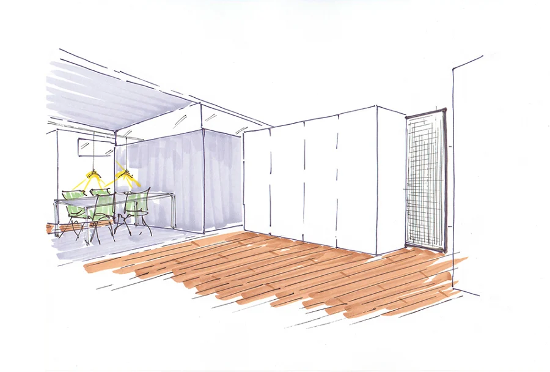
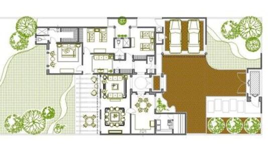
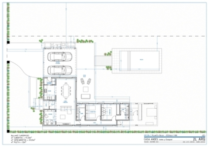
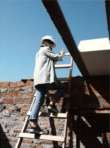
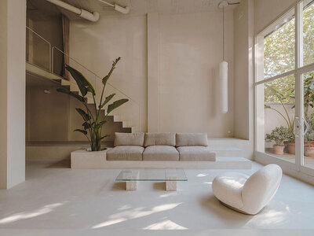

NUESTROS SERVICIOS
ANTEPROYECTOS
Son los primeros bocetos y esbozos de una idea o proyecto de arquitectura. Incluyen una evaluación inicial de las necesidades del cliente y las restricciones del sitio, así como un análisis de la viabilidad y la factibilidad del proyecto.
PROYECTOS
Los proyectos son la fase de diseño más detallada, que incluye la planificación del espacio, la selección de materiales y la definición de los sistemas estructurales y mecánicos. Los proyectos pueden incluir planos de construcción, renders 3D, modelos de maquetas y especificaciones de materiales.
LEGAJOS EJECUTIVOS
Los legajos ejecutivos son el conjunto completo de documentos y planos necesarios para la construcción de un proyecto. Incluyen detalles técnicos, especificaciones de materiales, cálculos estructurales y planos detallados.
DIRECCIÓN DE OBRA
La dirección de obra implica la supervisión y el control de la construcción de un proyecto de arquitectura. El arquitecto debe coordinar a los contratistas y subcontratistas, asegurando que se cumplan los plazos y presupuestos del proyecto.
ADMINISTRACIÓN
La administración de un estudio de arquitectura implica la gestión de recursos humanos, financieros y materiales del estudio. Esto incluye la contratación de personal, la gestión de proyectos y el mantenimiento de la contabilidad.
DISEÑO DE INTERIORES
El diseño de interiores se enfoca en la selección y diseño de los elementos interiores de un espacio, como mobiliario, iluminación y acabados. El diseño de interiores puede estar integrado en el diseño arquitectónico de un proyecto, o puede ser un servicio independiente.